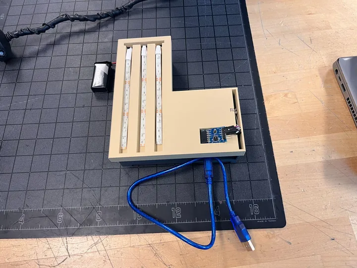
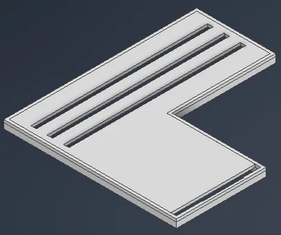
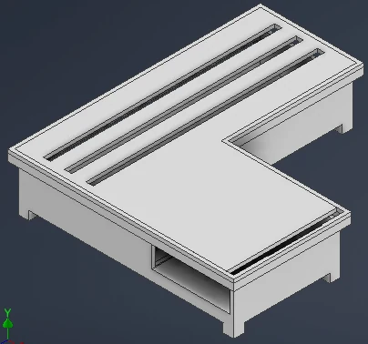
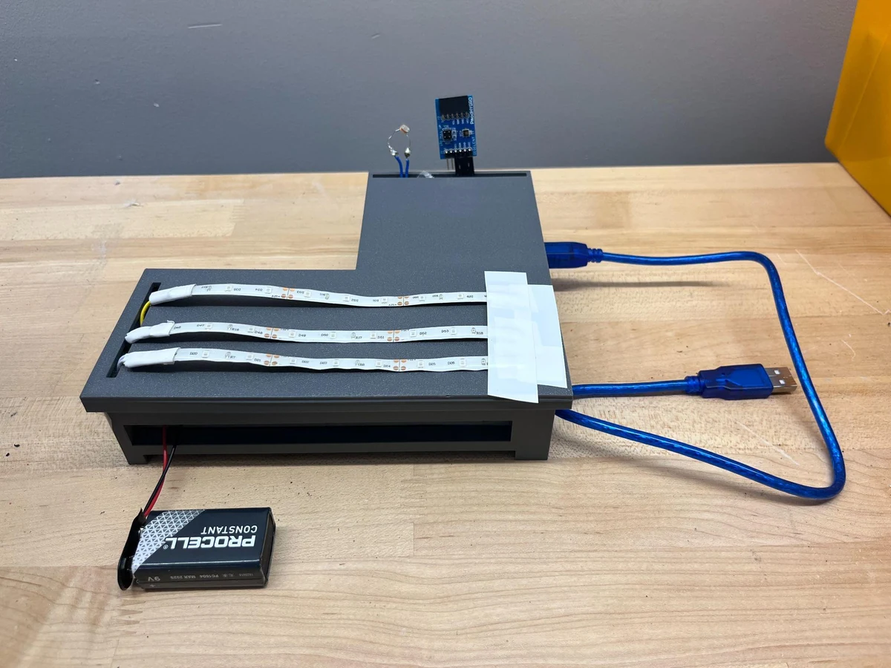

Team project / adaptive vehicle headlights
Protolight



Responding to more than darkness.
Our four-person team built a sensor-driven lighting prototype using an Arduino, ambient-light sensing, and temperature/humidity inputs. The final L-shaped enclosure integrates three LED strips and exposed sensor positions.
My contribution
The engineering notebook identifies my role as physical manager, coordinating physical construction, programming, and CAD work. I contributed housing and mounting design, PLA printing, circuit wiring, and Arduino programming alongside the team.
What we tested
The output shifted correctly in simulated fog and low light. This was a prototype validation, not a claim of road certification or production performance.
- Tools
- Onshape, Arduino, FDM printing
- Methods
- Sensor integration, dew point calculation, fit testing
- Role
- Physical manager; CAD, programming, and build coordination
Build progression and team credits
The notebook documents enclosure revisions V1–V5, cover changes, circuit testing, and the final prototype. Our team: Abdallah Abdulazeez, Moises Rodriguez, Sebastian Sobkow, and Mohammed Uddin.

Earlier prototype, before the final beige cover.
Early circuit assembly, from the supplied notebook.